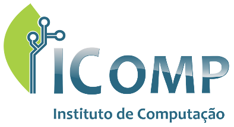

Instituto de Computação
O instituto de Computação é o mais novo instituto da UFAM, tendo sido formado a partir do antigo Departamento de Ciência da Computação(DCC).
No ensino de graduação, o DCC atua principalmente nos cursos de Ciência da Computação, Sistema de Informação e Engenharia da Computação, Também oferece disciplinas básicas de computação para 27 cursos de graduação em 7 unidades acadêmicas distintas.
Copyright 2016 Instituto de Computação da Universidade Federal do Amazonas.
Endereço: Av. General Rodrigo Octávio, 6200, Coroado 1. Cep: 69077-000